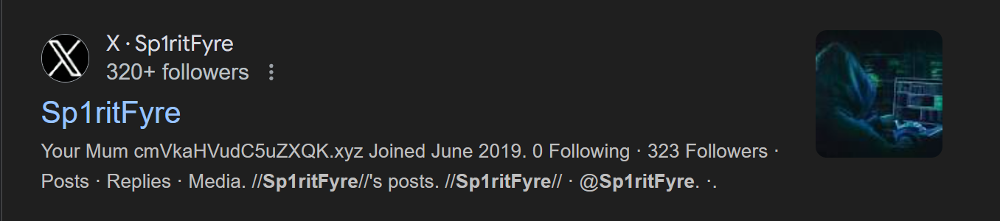
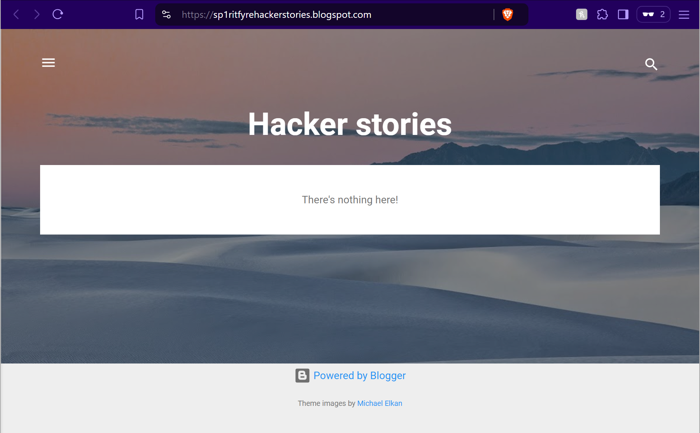

OSINT Operation Writeup
< Back ⌂ HomeIntroduction
This writeup is for Introduction to OSINT Capstone which is a part of Security Blue Team's Introduction to OSINT course. Link to the course Introduction to OSINT.
The following is the text from the document describing the challenge:
___________ _____ _ ____ _______ ___ _ _
| _ | ___ \ / ___| | / /\ \ / / ___/ _ \ | | | |
| | | | |_/ / \ `--.| |/ / \ V /| |_ / /_\ \| | | |
| | | | __/ `--. \ \ \ / | _|| _ || | | |
\ \_/ / | /\__/ / |\ \ | | | | | | | || |____| |____
\___/\_| \____/\_| \_/ \_/ \_| \_| |_/\_____/\_____/
Investigation into MSP data breach. Clear web investigation team.
===============================++===============================
Known Info:
=================
Twitter Handle: @sp1ritfyre
Required Info:
=================
[1] First Name:
[2] Last Name:
[3] Age:
[4] Country:
[5] Interests (5 minimum):
[6] Hacker's employer (company name):
[7] Hacker's position within company:
Online Presence:
=================================
[8] Self-Owned Website (Hacker owns the domain):
[9] Other Websites (Person does not own the domain, such as blogs):
Evidence Collection:
=================================
[10] Any URLs of webpages that directly tie individual to MSP breach:
Email Addresses Utilised:
=================================
[11] What email addresses have been used by the hacker? (2)
===============================++===============================
Solution
The only known information regarding the suspect is their Twitter/X handle, which is @sp1ritfyre.
Search the username
Since we only know the Twitter/X handle of of the suspect, we will start from there. So let's look up for this account. We can simply search this username on Google. I got some results out of which two caught my attention which are mentioned in the images below.
We found 2 profiles by the username sp1ritfyre: on Twitter/X and Blogger. We will start with the Twitter/X account.
Investigating Twitter/X Account
Let's view the Twitter/X account of the target. The images below shows content from the target's Twitter/X account.
There is a website link mentioned in the user info: cmVkaHVudC5uZXQK.xyz. This looks like a Base64 encoded string. Thus, I used an online tool to decode this string. The tool I used is at https://www.base64decode.org/. The following image shows that it is indeed a Base64 encoded string.

Hence, we got one of the requested info: A website owned by the target which is redhunt.net. So, I visited the website and it had the same red bulb image as the Twitter/X post. I do not know what the red bulb image indicates, but it may indicate that the Twitter/X account and this website are handled by the same user. The image of the website home page is as shown below.
I did not find much from the website. Hence, I moved on to our second lead: the Blogger page.
Investigating Blogger Account
I visited Sp1ritFyre's Blogger account page and we get some more information about Sp1ritFyre as shown in the image below.

The first thing I observed is the same red bulb image. This image feels like a trademark that shows that this content or website is handled by Sp1ritFyre.
I see that there is a hyperlink at Hacker Stories. Once I clicked on the link, I got redirected to https://sp1ritfyrehackerstories.blogspot.com/ as shown in the image below.
However, there is not any new information here, but this is a blog website handled by _Sp1ritFyre_ which is part of a requested info.
Next, we get to learn that Sp1ritFyre is a female. She joined Blogger in March 2020. We also get a "Location" that looks like a Hex string: 68747470733a2f2f73616d6d6965776f6f647365632e626c6f6773706f742e636f6d. I used CyberChef to decode this string, as it automatically detects the type of encoding and gives the decoded string, as shown in the image below.

Hence, we have now received another blog website: https://sammiewoodsec.blogspot.com.
Investigating Blogspot Thread
I visited https://sammiewoodsec.blogspot.com and the image below shows the landing page.
We get a bunch of information from this website. From the little section on the right, we can see that the user's first name is Sam and the last name is Woods. Hence, our target's name is Sam Woods who also goes by the username sp1ritfyre on Twitter/X.
Also, from the text that I have highlighted, we get the personal email address of Sam, which is d1ved33p@gmail.com.
As I scrolled down, I found a blog where Sam discusses how she got into Cybersecurity which also provides additional information, as shown in the image below.

We find out that Sam's age is 23. She went to University of Plymouth, and started working at PhilmanSecurityInc. as Junior Pen Tester shortly after she graduated.
Now, as we saw before, this website has an About Me section. We will move on to Sam's About Me section now to see if we can find any new information.
Sam Wood's Blogger Account
When clicked on visiting Sam's full profile, we get redericted to Sam's Blogger profile as shown in the image below.
We find some new additional information from this page. Sam is located in Reading, United Kingdom. She is interested in Security, Programming, Technology, Gaming, Photography, and Camping. Her favorite movie is Ready Player One which came out in 2018. Her favorite music bands are The Beatles, Rolling Stones, and Queen. Lastly, her favorite books are The Hunger Games series.
Now, we have enough information on our target sp1ritfyre or Sam Woods to fill out all the requested information and answer the questions.
Answering the Challenge
Based on the collected information, we can now answer all the challenge questions.
1) What is the hacker's first name? Sam
2) What is the hacker's last name? Woods
3) What is the hacker's age? 23
4) What country does the hacker live in? United Kingdom
5) What are some of the hacker's interests? Security, Programming, Technology, Gaming, Photography, and Camping
6) What company does the hacker work for? PhilmanSecurityInc.
7) What is the hacker's position within the company? Junior Pen Tester
8) What is the full URL of the website owned by the hacker? https://redhunt.net
9) List any full URLs of the websites not owned, but used by the hacker (Blogs only). https://sammiewoodsec.blogspot.com/, https://sp1ritfyrehackerstories.blogspot.com/
10. What email address has been used by the hacker? d1ved33p@gmail.com